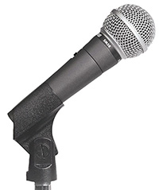
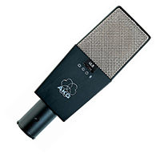
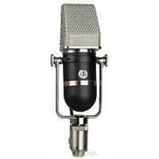

Microphone Types
Dynamic Mics
Dynamic mics are the most basic and the most common type of microphone. The capsules of these mics contain a diaphragm which vibrates from the difference in sound pressure levels created by the sound source. The diaphragm then transfers this enegy to a coil which is then sent from the microphone as voltage to a preamp.
Dynamic mics are found on stage and in the studio and typically utilize a cardioid polar pattern given the physical nature of the moving coil found inside.
Condenser Mics
Condenser mics utilize a thin element which is suspended in a magnetic field. As sound waves vibrate the element, variations in the magnetic field caused by the vibrations are converted into voltages which are sent to a preamp. Because the magnetic field requires constant power to be sustained, condenser mics typically require phantom power which is typically sent at 48v from the preamp to the microphone. Phantom power can also come from a battery found within the microphone or a seperate power supply specifically for that micrphone. Condensors typically capture more high range detail than dynamic mics and also offer a wider selection of pickup patterns. The C414B/ULS pictured offers cardioid, hypercardioid, omni, and figure-8 patterns.
Ribbon Mics
Ribbon mics are similar to dynamic mics as a voltage is created by the vibration of an element in the capsule. Specifically, the element in a ribbon mic is a very thin piece of metal (ribbon) only several microns thick. Because ribbon mics are less sensitive than condensers, they do not produce the same high end detail however the slower response of the ribbons tends to smooth out overall transient response which gives ribbons the warm, smooth sound they are famous for. The nature of the ribbon typically results in a figure-8 pickup pattern with the sounds from the front or the back of the ribbon carrying equal effect.